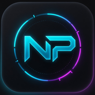

В The Division 2 наконец-то добавили кроссплей
В тактическом онлайн-шутере The Division 2 после выхода обновления Y8 S3.3 и поэтапной миграции серверов в ноябре 2026 года заработал кроссплей, который позволяет игрокам на ПК, PlayStation и Xbox искать напарников и проходить активность вместе…